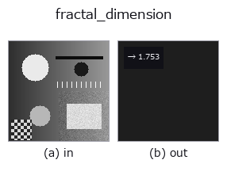

features op• 데이터 종류: image → feature
• 호출: fullseye.apply(img, "fractal_dimension", a=0.5, b=0.5)(2-D 는 이미지 1 장 + 스칼라 노브 2 개 a,b∈[0,1] 모델)

*그림은 128×128 합성 입력에서 실제로 실행한 출력. 왼쪽이 입력, 오른쪽이 출력. 점군은 위에서 본 산점도(밝기 = z), 1-D 열은 꺾은선, 볼륨은 z 방향 최대값 투영, 동영상은 가운데 프레임, 복소 영상은 진폭이며, 그림이 되지 않는 반환값은 값 자체를 표시한다.*
노브 a 를 훑기(0.1 / 0.5 / 0.9, 다른 노브는 기본값):
▸ fractal_dimension: knob a sweep (docs site)
*노브 b 는 출력을 바꾸지 않는다(실측: 0.1 / 0.5 / 0.9에서 동일).*
> 이 연산자의 설명은 아직 번역이 없습니다. 원문을 그대로 싣습니다.
テクスチャの複雑さを測る Minkowski-Bouligand(ボックスカウント)フラクタル次元。
閾値 `a(既定 0.5)で二値化し、箱サイズ s = 1, 2, 4, …` について「構造を
含む s×s 箱」の数 `N(s) を数え、log N(s) を log(1/s)` に最小二乗回帰した
傾きを返す(Mandelbrot 1982)。直線状の構造は ~1、平面を埋める領域は ~2、自己
相似な縁は中間の非整数(Sierpinski 三角形なら `log 3 / log 2 ≈ 1.585`)。表面
粗さ・組織テクスチャ・地形・破面などの安価な複雑さ特徴に使える。
有限解像度のため塗り潰し領域は 2 をやや下回る(粗いスケールで箱が飽和する既知の
過小評価)。`a が二値化の閾値、b` は未使用。構造が無い/1 スケールしか取れない
ときは 0 を返す。
• 샘플 데이터 카탈로그(DL URL / 라이선스) —— 2-D 는 skimage.data(BSD/public)+ 합성, 3-D 는 실데이터 소스(Stanford/PDS 등)의 DL URL.
• 연산자의 내력·참고문헌 —— 이 연산자 족의 바탕이 된 연구/기법의 출처.
• 알고리즘의 정전(저자·연도)과 용도는 위의 패밀리 사용 가이드에 적혀 있습니다.
아래 프로그램은 실제로 실행됨을 확인했습니다(그림과 같은 입력). Studio 도움말에서는 이 블록이 버튼이 되어 즉시 불러와 실행할 수 있습니다.
fractal_dimension 0.50 0.50
▸ Load this pipeline · Load & run
• gallery2d_features — py -3.11 examples/gallery2d_features.py
• poc_endless_zoom_and_turning_solids — py -3.11 examples/poc_endless_zoom_and_turning_solids.py
• poc_theorems_as_pictures — py -3.11 examples/poc_theorems_as_pictures.py
feature 를 입력으로 받는 것)features)effective_bit_depth · blob_count · area_frac · count_contours · total_length · vol_count · sk_euler · sk_entropy_feat
*Provenance: ops.py — 2D 연산자 레지스트리. 이 op 노트는 tools/opdocs.py md 가 자동 생성합니다(직접 편집하지 마세요).*
© 2026 Kazufumi Furuse — Fullseye operator documentation. Licensed under Apache-2.0.
{kind=link}